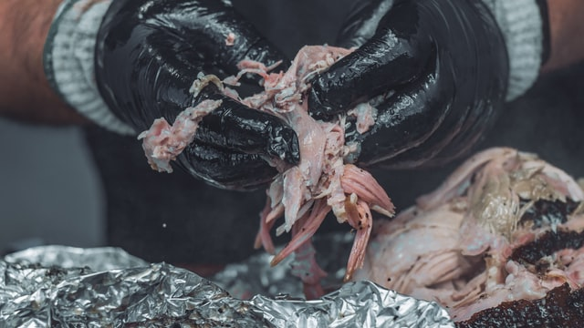

Pulled Pork

Description
One of the essentials when it comes to BBQ is delicious pulled pork. In fact, if you're looking to feed a hungry crowd and don't want too much fuss, pulled pork is always the way to go. So get your smoker ready, we're gonna have some fun with this recipe.
Ingredients
These are what you need:
- Pork shoulder a.k.a Boston butt
- Yellow mustard
- BBQ dry rub
- Lump charcoal or charcoal briquettes for fuel
- Smoking wood (hickory is great with pork)
- Wrapping material
- Butcher paper or
- Aluminum foil
- A spray bottle for spritzing that contains
- Apple juice (50%)
- Water (50%)
- A nice sunny day
- A few beers
- Some good music (this playlist is pretty good)
Steps
Here is how you do it:
- Trim off some fat from the pork shoulder.
- Score the remaining fat in a grid pattern. This allows the rub to penetrate the meat.
- Rub the pork with yellow mustard. This helps the rub stick better.
- Apply the BBQ rub evenly.
- Get your smoker ready. The ideal temperature range would be 225F to 250F. This is low n slow.
- Place the Boston butt in the smoker.
- Smoke the pork until its internal temperature reaches 160F. Along the way, spritz the pork to keep it moist.
- When at 160F, remove the pork butt and wrap it in either paper or foil. It's your choice.
- Continue cooking until the pork hits 200-205F internal.
- Let it rest for about 30 minutes.
- With your bear claws, shred or pull the pork similar to the picture above.
- Dig in!
If you want more detailed instructions, please click here.
Click here to go back to the homepage.